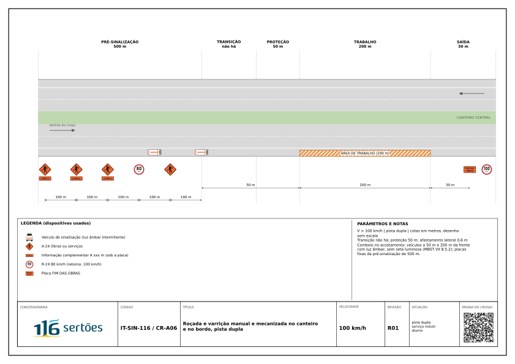

RASCUNHO R01 Revisão em elaboração, ainda não aprovada. Use somente como referência.
Croqui diurno



Resumo da aplicação
Resumo provisório: campos do catálogo de croquis, sem o texto completo da IT.
Descrição
Roçada e varrição no bordo da pista ou no canteiro central, com equipe a pé e máquina que avançam pelo acostamento.
Parâmetros
| Via | dupla |
| Velocidade | 100 km/h |
| Tipo de serviço | móvel |
| Faixas por sentido | 2 |
| Extensão do trabalho | 200 m |
Dispositivos mínimos
- veículo de sinalização com luz âmbar intermitente a 50 m da frente
- veículo de sinalização com luz âmbar e A-24 a 200 m da frente
Notas
No canteiro, o croqui é aplicado espelhado (lado esquerdo); canteiro com menos de 3 m exige fechamento da faixa 1 pelo CR-A01 ou CR-A02. Equipe sempre de frente para o tráfego.
Checklist
LV-08 · Serviço móvel (13 itens)
Início do serviço móvel e cada mudança de trecho. Preenche: Responsável pela frente.
- Na faixa, comboio sem placa fixa, com a A-24 no veículo de advertência; no acostamento, pré-sinalização fixa de 500 m com A-24 e R-19
- Veículo de proteção a 50 m e veículo de advertência a 200 m da frente, com luz âmbar intermitente
- Veículo de proteção com AMC ou, sem AMC, veículo de sinalização; na faixa, seta luminosa ligada nos dois veículos, apontando para o lado livre
- Veículo de proteção freado, com as rodas alinhadas, entre o fluxo e a equipe
- Distância de proteção mantida durante todo o deslocamento
- Ninguém trabalha nem circula entre o veículo de proteção e o veículo de serviço
- Serviço no acostamento: nenhuma seta luminosa; veículos com luz âmbar intermitente
- Equipe a pé do lado do acostamento, de frente para o tráfego, sem atravessar a pista
- Roçada: tela de proteção quando o tráfego passa perto da máquina
- Pintura: cones sobre a tinta fresca, recolhidos após a secagem com o comboio protegendo
- Parada no mesmo ponto além do previsto no plano: frente passa para a família B, com sinalização fixa
- Serviço móvel na faixa à noite só com plano específico
- Encerramento: veículos com seta ligada até sair da faixa; placas fixas recolhidas, quando houver, e CCO avisado
Todos os croquis · Revisão R01